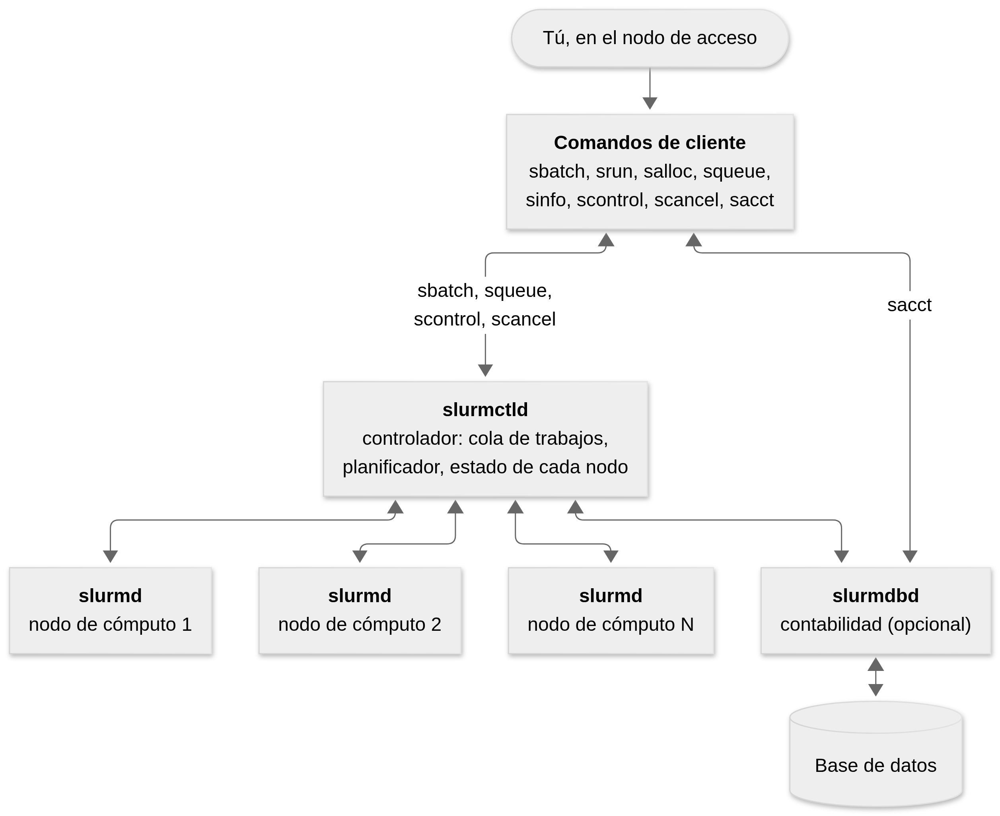
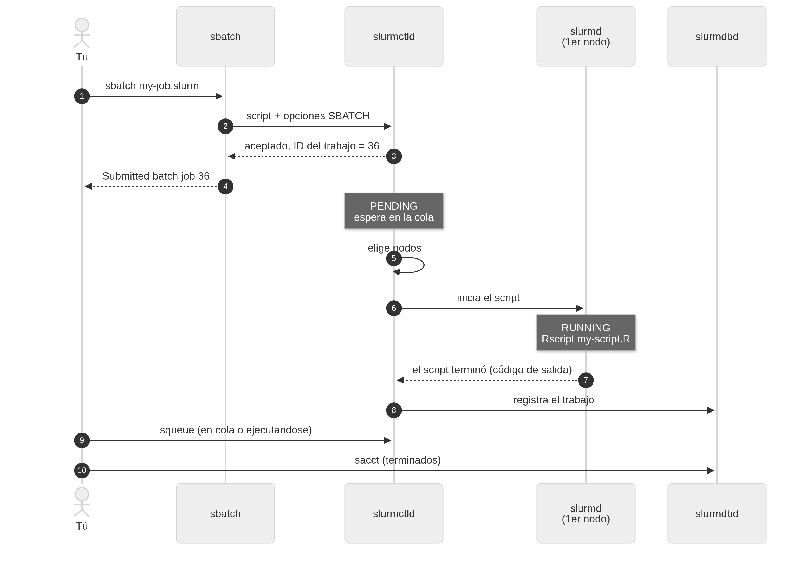
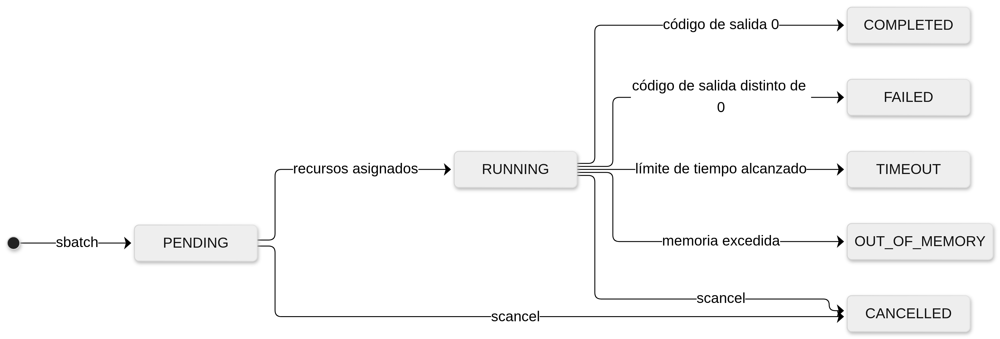
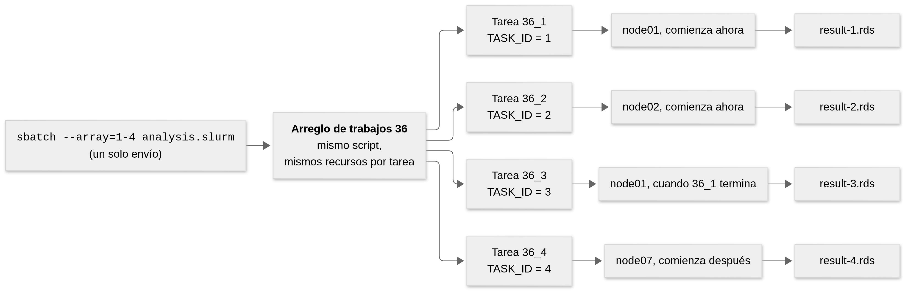
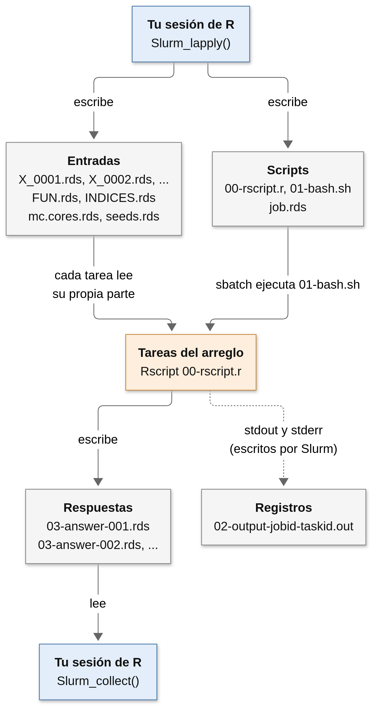
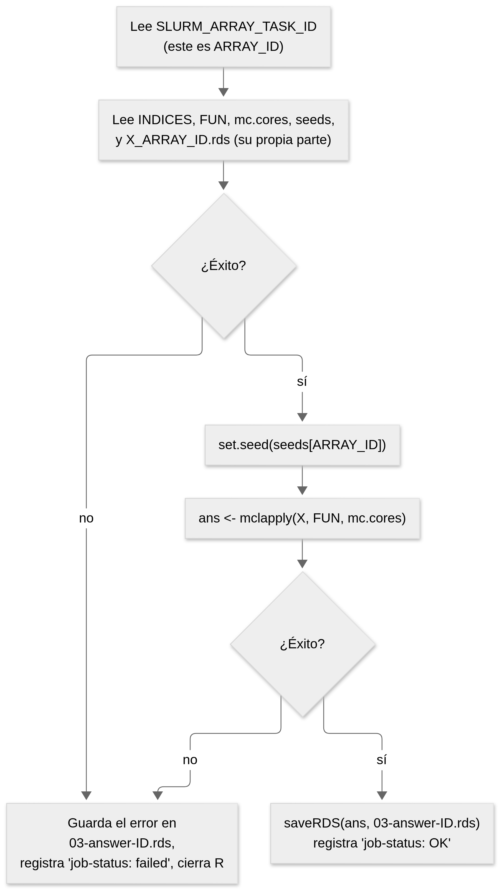
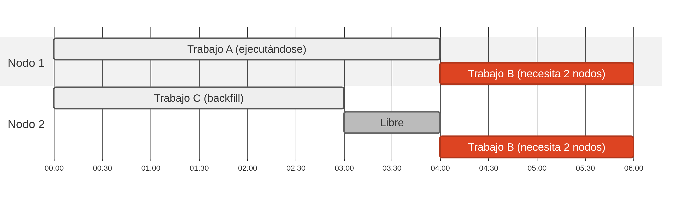
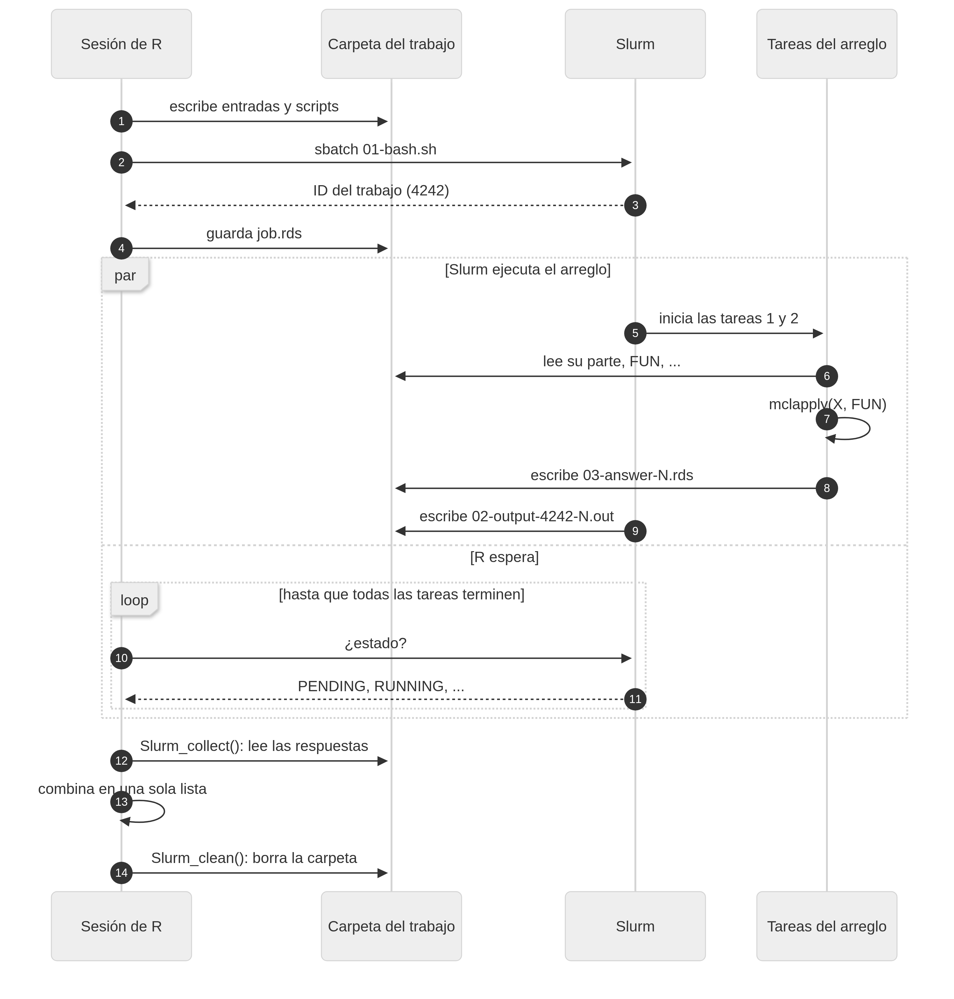

Bajo el capó: Slurm y slurmR
Esta versión del capítulo fue traducida de manera automática utilizando IA. El capítulo aún no ha sido revisado por un humano.
Este capítulo fue escrito casi en su totalidad por Claude Code. El autor le pidió crear una versión más detallada de cómo funcionan Slurm y slurmR. El contenido fue revisado y editado por el autor, pero el borrador original fue generado por IA. Además, la IA utilizó la documentación del paquete slurmR (escrito por el autor) para explicar cómo funciona el paquete.
En el capítulo anterior aprendimos el vocabulario (nodos, particiones, tareas, CPUs) y enviamos un “Hola mundo” con sbatch. Antes de comenzar a ejecutar análisis reales en el siguiente capítulo, vale la pena dedicar unos minutos a entender qué ocurre después de presionar enter. Cuando algo sale mal en un cluster (un trabajo que nunca comienza, un trabajo que muere sin dejar mensaje, resultados que nunca aparecen), la respuesta casi siempre está en alguna de las piezas que describimos aquí.
Este capítulo tiene dos partes:
Cómo funciona Slurm: los procesos que componen un cluster con Slurm, la vida de un trabajo desde que se envía hasta que termina, cómo el planificador decide qué se ejecuta y dónde, y qué es un arreglo de trabajos (job array).
Cómo funciona slurmR: cómo el paquete
slurmRusa arreglos de trabajos para ofrecer funciones similares a las del paqueteparallel(Slurm_lapply(),Slurm_sapply(), …) que se ejecutan en un cluster, incluyendo cada archivo que crea en el camino.
No es necesario ejecutar código para seguir este capítulo. La única salida de R que verás proviene del “modo detallado” (verbose mode) del paquete, que muestra lo que slurmR haría sin enviar nada.
Cómo funciona Slurm
Los personajes
Slurm es una colección de programas que se comunican entre sí a través de la red. Algunos de ellos se ejecutan todo el tiempo (llamados demonios o daemons, la d al final de slurmctld, slurmd y slurmdbd), y otros son los comandos que tú escribes. La Figura 6.1 muestra cómo se relacionan entre sí, y la Tabla 6.1 describe cada pieza.

| Pieza | Dónde se ejecuta | Qué hace |
|---|---|---|
slurmctld |
Nodo de administración | El “cerebro.” Mantiene la lista de todos los nodos y su estado, guarda la cola de trabajos, decide qué trabajo se ejecuta dónde y cuándo, y les dice a los nodos qué hacer. Puede haber un controlador de respaldo en caso de que este falle. |
slurmd |
Cada nodo de cómputo | El “trabajador.” Espera en un nodo instrucciones de slurmctld, inicia el trabajo, lo monitorea, informa cuando termina y espera más. Suele compararse con una terminal remota. |
slurmdbd |
Nodo de administración (opcional) | Registra información de contabilidad (quién ejecutó qué, por cuánto tiempo, usando cuánta memoria) en una base de datos. De aquí obtiene sacct su información. |
| Comandos de cliente | Nodo de acceso (y nodos de cómputo) | sbatch (enviar un script), srun (ejecutar un comando dentro de una asignación), salloc (obtener una asignación interactiva), squeue (listar trabajos), sinfo (listar nodos y particiones), scontrol (inspeccionar y modificar), scancel (cancelar), sacct (trabajos pasados). |
Una consecuencia importante de este diseño es que el nodo de acceso (login node) es solo una puerta de entrada. Cuando escribes sbatch, el comando no ejecuta tu script: envía una solicitud a slurmctld y termina. Tu script se ejecutará más tarde, en uno o más nodos de cómputo, bajo la supervisión de slurmd.
Nodos, particiones, trabajos y pasos de trabajo
En el capítulo anterior definimos nodos y particiones. Slurm agrega dos conceptos más sobre ellos: el trabajo (job) y el paso de trabajo (job step).
Un trabajo es una asignación de recursos: “dame estos nodos/CPUs/memoria por este tiempo.” Cada trabajo recibe un identificador único (el número que
sbatchimprime después deSubmitted batch job).Un paso de trabajo es un conjunto de tareas lanzadas dentro de un trabajo, típicamente con
srun. Un trabajo puede tener uno o muchos pasos, ejecutándose al mismo tiempo o uno después de otro.
Por ejemplo, a un trabajo se le pueden asignar seis nodos de una partición y ejecutar un solo paso que los usa todos, mientras que otro trabajo divide sus cuatro nodos en dos pasos de dos nodos cada uno. Los nodos que no pertenecen a ningún trabajo están libres para que otros trabajos los usen.
Para usuarios de R, la situación más común es simple: un script de lote (el trabajo) que llama a Rscript una vez (por lo que, en la práctica, hay un solo paso). Cualquier paralelismo que quieras dentro de ese trabajo (múltiples núcleos con mclapply(), un cluster de sockets, etc.) depende de tu código en R. Slurm reserva los recursos, no paraleliza tu programa.
La vida de un trabajo
La Figura 6.2 sigue a un trabajo de lote desde el momento en que lo envías hasta que queda registrado en la base de datos de contabilidad.

sbatch my-job.slurm.
En palabras:
Envío.
sbatchlee tu script, recoge las opciones#SBATCHal inicio (para bash son solo comentarios, perosbatchlas interpreta) y envía todo aslurmctld. El controlador verifica que la solicitud tenga sentido (¿existe la partición? ¿puedes usar esa cuenta? ¿está permitido ese límite de tiempo?), asigna un ID al trabajo y lo pone en la cola. Por esosbatchtermina inmediatamente.Espera. El trabajo permanece en estado
PENDINGhasta que el planificador le encuentra un lugar (ver Cómo decide Slurm quién se ejecuta y dónde en el apéndice de este capítulo). La versión corta: pide lo que necesitas, no mucho más (para que el trabajo quepa en los huecos y comience antes) ni menos (o Slurm lo detendrá).Asignación e inicio. Cuando los recursos están disponibles,
slurmctldlos marca como tuyos y le pide alslurmddel primer nodo de la asignación que ejecute tu script de lote. Antes de hacerlo, Slurm define varias variables de entorno (SLURM_JOB_ID,SLURM_CPUS_PER_TASK,SLURMD_NODENAME,SLURM_ARRAY_TASK_ID, …), y todo lo que el script imprime en la salida estándar o en el error estándar va al archivo indicado en--output(por defectoslurm-<jobid>.outen el directorio desde donde ejecutastesbatch).Ejecución. El script es un script de bash normal: ejecuta comandos uno después de otro en ese primer nodo. Si llama a
srun, Slurm lanza pasos de trabajo en los recursos asignados; si solo llama aRscript, se inicia un único proceso de R en ese nodo.Término. Cuando el script termina, o cuando algo lo obliga a detenerse,
slurmdlo informa, los recursos se liberan y se registran el estado final del trabajo y los recursos que usó.
Un trabajo siempre está en uno de unos pocos estados, que puedes ver en la columna ST de squeue y en la columna State de sacct. La Figura 6.3 muestra los más comunes, y la Tabla 6.2 lista sus códigos.

| Estado | Código en squeue |
Significado |
|---|---|---|
PENDING |
PD |
Esperando recursos (o que un trabajo de mayor prioridad pase primero). |
RUNNING |
R |
El trabajo tiene una asignación y el script se está ejecutando. |
COMPLETING |
CG |
El script terminó y Slurm está limpiando (algunos procesos pueden seguir activos). |
COMPLETED |
CD |
El script terminó con código de salida 0. |
FAILED |
F |
El script terminó con un código de salida distinto de cero. |
CANCELLED |
CA |
Alguien (tú o un administrador) canceló el trabajo con scancel. |
TIMEOUT |
TO |
El trabajo alcanzó el límite de tiempo (--time) y fue detenido. |
OUT_OF_MEMORY |
OOM |
El trabajo intentó usar más memoria de la solicitada. |
Nota que Slurm decide si un trabajo tuvo éxito basándose solo en el código de salida del script de lote. Slurm no sabe nada sobre si tu código de R hizo lo que querías; si R termina normalmente, el trabajo queda COMPLETED. Veremos por qué esto importa cuando hablemos del manejo de errores en slurmR.
Arreglos de trabajos
Muchos problemas en estadística y ciencia de datos se ven así: ejecutar el mismo programa muchas veces, cambiando solo un pequeño detalle entre ejecuciones. Simular un modelo 1.000 veces con distintas semillas, ajustar el mismo modelo a 200 bases de datos, evaluar una grilla de parámetros de ajuste o calcular 5.000 réplicas bootstrap son todos ejemplos. Cada ejecución es independiente de las demás, así que todas pueden ejecutarse al mismo tiempo. Estos se conocen como problemas vergonzosamente paralelos (embarrassingly parallel).
Una forma de abordarlos es escribir un loop en R que recorra todos los casos y pedir muchos núcleos (lo que hicimos con mclapply() en el capítulo de parallel). Esto funciona, pero todos los núcleos deben venir de un único nodo, así que estás limitado al tamaño del nodo más grande, y Slurm tiene que encontrar un hueco en el cluster lo suficientemente grande para todo el trabajo. La otra alternativa es enviar muchos trabajos pequeños, pero escribir sbatch mil veces es engorroso, satura la cola y hace que los trabajos sean más difíciles de seguir.
Un arreglo de trabajos es la respuesta de Slurm: envías un script con un comando sbatch y le pides a Slurm que cree N copias de él. Slurm trata cada copia, llamada tarea del arreglo (array task), como un trabajo independiente: tiene su propio ID, se planifica de forma independiente (una tarea puede comenzar de inmediato en el nodo 1, otra unos minutos después en el nodo 7 y una tercera puede esperar hasta la tarde), tiene su propia asignación (los recursos que solicitaste aplican por tarea, no al arreglo completo) y escribe su propio archivo de salida. La única diferencia entre las copias es un número, el índice del arreglo, que Slurm pone a disposición de cada copia en la variable de entorno SLURM_ARRAY_TASK_ID. Depende de tu script usar ese número para decidir qué hacer: qué semilla usar, qué fila de una tabla de parámetros evaluar, qué parte de los datos procesar o qué archivo leer.
La Figura 6.4 muestra un arreglo de trabajos con cuatro tareas.

El tamaño y los índices del arreglo se especifican con la opción --array (o -a) de sbatch:
--array.
| Opción | Tareas creadas |
|---|---|
--array=1-100 |
1, 2, …, 100 |
--array=1,3,5,7 |
1, 3, 5 y 7 |
--array=1-7:2 |
1, 3, 5 y 7 (un rango con paso 2) |
--array=1-100%10 |
1, …, 100, pero no más de 10 ejecutándose al mismo tiempo |
La última es útil cuando cada tarea lee un archivo grande o usa un recurso compartido (como una base de datos) y no quieres que 100 de ellas lo hagan al mismo tiempo.
Además de SLURM_ARRAY_TASK_ID, Slurm define otras variables en cada tarea y ofrece patrones para nombres de archivo que evitan que las salidas se sobrescriban:
| Qué | Variable | En --output usar |
Ejemplo en la tarea 2 del trabajo 36 |
|---|---|---|---|
| ID del arreglo completo | SLURM_ARRAY_JOB_ID |
%A |
36 |
| Índice de esta tarea | SLURM_ARRAY_TASK_ID |
%a |
2 |
| ID de esta tarea como trabajo normal | SLURM_JOB_ID |
%j |
37 |
| Número de tareas en el arreglo | SLURM_ARRAY_TASK_COUNT |
4 |
Slurm también permite referirse a una sola tarea como <id del arreglo>_<índice de la tarea> (p. ej., 36_2), lo que puedes usar con squeue, sacct, scontrol y scancel. Cancelar 36_2 detiene solo esa tarea; cancelar 36 las detiene todas.
Desde R, usar el índice se ve así. Supongamos que queremos evaluar un modelo sobre una grilla de seis combinaciones de parámetros, una por tarea. El script de R (array-example.R) lee su propio índice y elige su fila:
# Each array task gets a different value of SLURM_ARRAY_TASK_ID
id <- as.integer(Sys.getenv("SLURM_ARRAY_TASK_ID"))
# All tasks build the same grid, but each takes a different row
grid <- expand.grid(
n = c(100, 1000),
rho = c(0.1, 0.5, 0.9)
)
params <- grid[id, ]
set.seed(id) # A different seed per task
res <- my_simulation(n = params$n, rho = params$rho)
# Each task saves its own file
saveRDS(res, sprintf("result-%03d.rds", id))y el script de bash que lo envía (seis tareas, un núcleo cada una) es
#!/bin/sh
#SBATCH --job-name=array-example
#SBATCH --output=array-example-%A-%a.out
#SBATCH --array=1-6
#SBATCH --cpus-per-task=1
#SBATCH --time=00:30:00
module load R/4.2.2
Rscript array-example.RUn solo sbatch array-example.slurm crea seis trabajos, cada uno de los cuales produce su propio result-00X.rds y su propio registro array-example-<jobid>-<X>.out.
Los arreglos de trabajos tienen además algunas ventajas que los convierten en la herramienta preferida para este tipo de trabajo:
Escala. Las tareas pueden repartirse en muchos nodos, así que el límite es el tamaño del cluster (y los límites de los administradores), no el tamaño de un nodo.
Planificación más rápida. Los trabajos pequeños caben más fácilmente en los huecos del planificador (ver backfill), y Slurm maneja un arreglo completo como un solo envío en lugar de miles.
Las fallas quedan contenidas. Si la tarea 17 se queda sin memoria, las otras 99 no se ven afectadas, y puedes volver a ejecutar solo la tarea que falló con, p. ej.,
sbatch --array=17 analysis.slurm.Fácil seguimiento. Un solo ID identifica a todo el grupo, y la salida de cada tarea está en su propio archivo.
La Tabla 6.5 compara los arreglos de trabajos con las otras formas de obtener más de una CPU que hemos visto hasta ahora.
| Estrategia | ¿Dónde se ejecuta? | ¿Quién crea el paralelismo? |
|---|---|---|
Trabajo multinúcleo (--cpus-per-task=8) |
Un trabajo, en un nodo, con 8 núcleos | Tu código de R (mclapply(), parLapply()) |
Trabajo con varias tareas (--ntasks=8) |
Un trabajo, posiblemente en varios nodos | Tu código de R (p. ej., un cluster de sockets o MPI) |
Arreglo de trabajos (--array=1-8) |
8 trabajos independientes, en cualquier parte del cluster | Slurm; tu script solo usa el índice |
El paquete slurmR construye su familia de funciones Slurm_lapply() sobre arreglos de trabajos, como veremos en la siguiente parte. Para más detalles sobre arreglos de trabajos, consulta la documentación oficial.
Cómo funciona slurmR
La idea
El paquete slurmR (Vega Yon y Marjoram 2019, 2022) es un envoltorio liviano de Slurm. Su objetivo de diseño es permitirte pasar del paquete parallel a un cluster sin tener que aprender a escribir scripts de Slurm: así como parallel ofrece parLapply(), parSapply() y clusterMap(), slurmR ofrece Slurm_lapply(), Slurm_sapply() y Slurm_Map(). También está Slurm_EvalQ(), que evalúa una expresión en cada trabajo (como clusterEvalQ()), y makeSlurmCluster(), que crea un cluster de sockets a partir de una asignación de Slurm (la usamos en el siguiente capítulo).
Las funciones Slurm_*apply funcionan así: entregas una lista X y una función FUN; slurmR divide la lista en njobs partes, crea un arreglo de trabajos con njobs tareas, y cada tarea aplica FUN a su parte (usando mclapply(), de modo que cada tarea también puede usar varios núcleos). Cuando todas las tareas terminan, junta las piezas. El resultado es el mismo que habría devuelto lapply(X, FUN), pero el cálculo se hizo en tantos trabajos distintos como quisiste.
Todo se hace escribiendo archivos. Cada llamada a Slurm_lapply() crea, al menos, dos scripts: un script de R con el trabajo que debe hacer cada tarea del arreglo, y un script de bash con las opciones de sbatch que lo envía. Los datos y la función se guardan en disco (como archivos .rds) para que las tareas, que se ejecutan en otros computadores, puedan leerlos. Por esta razón, la carpeta donde escribe slurmR debe ser visible desde los nodos de cómputo: un sistema de archivos compartido.
El recorrido de un trabajo
En resumen, una llamada como Slurm_lapply(X, FUN, njobs = 2) pasa por los siguientes pasos. En tu sesión de R, slurmR divide X en njobs partes, guarda las partes, la función y las opciones en la carpeta del trabajo, escribe los dos scripts (00-rscript.r y 01-bash.sh) y ejecuta sbatch 01-bash.sh. Luego Slurm pone en cola un arreglo de trabajos (--array=1-njobs), y cada tarea del arreglo ejecuta Rscript 00-rscript.r: lee su propia parte, calcula y guarda su respuesta en 03-answer-<id>.rds. Mientras tanto, tu sesión de R le consulta a Slurm hasta que todas las tareas han terminado, Slurm_collect() lee y combina las respuestas y, cuando ya no las necesitas, Slurm_clean() borra la carpeta del trabajo.
Las siguientes secciones recorren cada uno de estos pasos, usando el modo detallado del paquete para ver exactamente qué se crea. En el apéndice de este capítulo se incluye una línea de tiempo de todo el proceso.
Mirando bajo el capó
El siguiente ejemplo viene del README del paquete (Vega Yon y Marjoram (2022)). Creamos 100 vectores de 50 números aleatorios cada uno y queremos calcular la media de cada uno usando Slurm_lapply():
library(slurmR)
# Loading required package: parallel
# slurmR default option for `tmp_path` (used to store auxiliar files) set to:
# /home/user/project
# You can change this and checkout other slurmR options using: ?opts_slurmR, or you could just type "opts_slurmR" on the terminal.
# Suppose that we have 100 vectors of length 50 ~ Unif(0,1)
set.seed(881)
x <- replicate(100, runif(50), simplify = FALSE)El argumento plan = "none" le indica a Slurm_lapply() que cree el trabajo pero que no lo envíe, así que podemos ver lo que produce sin necesitar un cluster. Al activar el modo detallado, slurmR imprime el contenido de los dos scripts que escribe:
opts_slurmR$verbose_on()
ans <- Slurm_lapply(x, mean, plan = "none")La salida se reproduce tal como aparece en el README del paquete, salvo que el directorio personal del autor se reemplazó por /home/user. También omitimos una advertencia inofensiva de normalizePath que slurmR imprime porque la carpeta del trabajo aún no existe en el momento en que revisa la ruta.
--------------------------------------------------------------------------------
[VERBOSE MODE ON] The R script that will be used is located at: /home/user/project/slurmr-job-113bd5bca5b18/00-rscript.r and has the following contents:
--------------------------------------------------------------------------------
.libPaths(c("/home/user/R/x86_64-pc-linux-gnu-library/4.2", "/usr/local/lib/R/site-library", "/usr/lib/R/site-library", "/usr/lib/R/library"))
message("[slurmR info] Loading variables and functions... ", appendLF = FALSE)
Slurm_env <- function (x = "SLURM_ARRAY_TASK_ID")
{
y <- Sys.getenv(x)
if ((x == "SLURM_ARRAY_TASK_ID") && y == "") {
return(1)
}
y
}
ARRAY_ID <- as.integer(Slurm_env("SLURM_ARRAY_TASK_ID"))
# The -snames- function creates the write names for I/O of files as a
# function of the ARRAY_ID
snames <- function (type, array_id = NULL, tmp_path = NULL, job_name = NULL)
{
if (length(array_id) && length(array_id) > 1)
return(sapply(array_id, snames, type = type, tmp_path = tmp_path,
job_name = job_name))
type <- switch(type, r = "00-rscript.r", sh = "01-bash.sh",
out = "02-output-%A-%a.out", rds = if (missing(array_id)) "03-answer-%03i.rds" else sprintf("03-answer-%03i.rds",
array_id), job = "job.rds", stop("Invalid type, the only valid types are `r`, `sh`, `out`, and `rds`.",
call. = FALSE))
sprintf("%s/%s/%s", tmp_path, job_name, type)
}
TMP_PATH <- "/home/user/project"
JOB_NAME <- "slurmr-job-113bd5bca5b18"
# The -tcq- function is a wrapper of tryCatch that on error tries to recover
# the message and saves the outcome so that slurmR can return OK.
tcq <- function (...)
{
ans <- tryCatch(..., error = function(e) e)
if (inherits(ans, "error")) {
ARRAY_ID. <- get("ARRAY_ID", envir = .GlobalEnv)
msg <- paste0("[slurmR info] An error has ocurred while evualting the expression:\n[slurmR info] ",
paste(deparse(match.call()[[2]]), collapse = "\n[slurmR info] "),
"\n[slurmR info] in ", "ARRAY_ID # ", ARRAY_ID.,
"\n[slurmR info] The error will be saved and quit R.\n")
message(msg, immediate. = TRUE, call. = FALSE)
ans <- list(res = ans, array_id = ARRAY_ID., job_name = get("JOB_NAME",
envir = .GlobalEnv), slurmr_msg = structure(msg,
class = "slurm_info"))
saveRDS(list(ans), snames("rds", tmp_path = get("TMP_PATH",
envir = .GlobalEnv), job_name = get("JOB_NAME", envir = .GlobalEnv),
array_id = ARRAY_ID.))
message("[slurmR info] job-status: failed.\n")
q(save = "no")
}
invisible(ans)
}
message("done loading variables and functions.")
tcq({
INDICES <- readRDS("/home/user/project/slurmr-job-113bd5bca5b18/INDICES.rds")
})
tcq({
X <- readRDS(sprintf("/home/user/project/slurmr-job-113bd5bca5b18/X_%04d.rds", ARRAY_ID))
})
tcq({
FUN <- readRDS("/home/user/project/slurmr-job-113bd5bca5b18/FUN.rds")
})
tcq({
mc.cores <- readRDS("/home/user/project/slurmr-job-113bd5bca5b18/mc.cores.rds")
})
tcq({
seeds <- readRDS("/home/user/project/slurmr-job-113bd5bca5b18/seeds.rds")
})
set.seed(seeds[ARRAY_ID], kind = NULL, normal.kind = NULL)
tcq({
ans <- parallel::mclapply(
X = X,
FUN = FUN,
mc.cores = mc.cores
)
})
saveRDS(ans, sprintf("/home/user/project/slurmr-job-113bd5bca5b18/03-answer-%03i.rds", ARRAY_ID), compress = TRUE)
message("[slurmR info] job-status: OK.\n")
--------------------------------------------------------------------------------
The bash file that will be used is located at: /home/user/project/slurmr-job-113bd5bca5b18/01-bash.sh and has the following contents:
--------------------------------------------------------------------------------
#!/bin/sh
#SBATCH --job-name=slurmr-job-113bd5bca5b18
#SBATCH --output=/home/user/project/slurmr-job-113bd5bca5b18/02-output-%A-%a.out
#SBATCH --array=1-2
#SBATCH --job-name=slurmr-job-113bd5bca5b18
#SBATCH --cpus-per-task=1
#SBATCH --ntasks=1
/usr/lib/R/bin/Rscript /home/user/project/slurmr-job-113bd5bca5b18/00-rscript.r
--------------------------------------------------------------------------------
EOF
--------------------------------------------------------------------------------
Warning: [submit = FALSE] The job hasn't been submitted yet. Use sbatch() to submit the job, or you can submit it via command line using the following:
sbatch --job-name=slurmr-job-113bd5bca5b18 /home/user/project/slurmr-job-113bd5bca5b18/01-bash.shLa salida tiene tres partes: el script de R (00-rscript.r), el script de bash (01-bash.sh) y una advertencia final que nos recuerda que el trabajo no ha sido enviado y nos da el comando para enviarlo manualmente. Las siguientes secciones explican cada una.
La llamada anterior no envió nada, pero sí escribió archivos en disco, así que puedes inspeccionarlos. Cuando termines de revisarlos, Slurm_clean(ans) los elimina.
Dónde vive todo: la carpeta del trabajo
Cada llamada crea su propia carpeta, que slurmR llama la ruta temporal (temporary path) del trabajo. El nombre de la carpeta se controla con dos opciones:
tmp_path: el directorio donde se crean las carpetas de los trabajos. Por defecto es el directorio de trabajo actual de tu sesión de R (el mensaje que aparece al cargar el paquete te indica el valor actual). Puedes cambiarlo para una sola llamada con el argumentotmp_path, o para toda la sesión conopts_slurmR$set_tmp_path().job_name: el nombre de la carpeta (y del trabajo en Slurm). Por defecto es un nombre aleatorio comoslurmr-job-113bd5bca5b18, de modo que dos llamadas nunca chocan.
Los archivos de un trabajo terminan en <tmp_path>/<job_name>/. Para el ejemplo anterior, usando dos trabajos, la carpeta se ve así una vez que el trabajo se ha ejecutado:
slurmr-job-113bd5bca5b18/
├── 00-rscript.r # el script de R que ejecuta cada tarea
├── 01-bash.sh # el script de bash enviado con sbatch
├── 02-output-<jobid>-1.out # registro de la tarea 1 (creado por Slurm)
├── 02-output-<jobid>-2.out # registro de la tarea 2 (creado por Slurm)
├── 03-answer-001.rds # resultado de la tarea 1 (creado por las tareas)
├── 03-answer-002.rds # resultado de la tarea 2 (creado por las tareas)
├── FUN.rds # la función, compartida por todas las tareas
├── INDICES.rds # qué elementos de X fueron a cada tarea
├── job.rds # el objeto slurm_job (ID del trabajo, opciones, ...)
├── mc.cores.rds # número de núcleos por tarea
├── seeds.rds # una semilla aleatoria por tarea
├── X_0001.rds # parte de X para la tarea 1
└── X_0002.rds # parte de X para la tarea 2Los archivos creados antes del envío (00, 01, FUN, INDICES, job, mc.cores, seeds y las partes X_*) los escribe tu sesión de R. Los archivos 02-output-* y 03-answer-* aparecen solo después de que las tareas se ejecutan. La Tabla 6.6 describe cada uno.
| Archivo | Creado por | Descripción |
|---|---|---|
00-rscript.r |
Tu sesión de R | El script de R que ejecuta cada tarea del arreglo. Todas las tareas usan el mismo script; se diferencian por el valor de SLURM_ARRAY_TASK_ID. |
01-bash.sh |
Tu sesión de R | El script de bash que se pasa a sbatch, con las opciones #SBATCH. Llama a Rscript 00-rscript.r. |
X_0001.rds, X_0002.rds, … |
Tu sesión de R | La lista X dividida en njobs partes, un archivo por tarea (por defecto parallel::splitIndices() crea partes consecutivas y de igual tamaño). Cada tarea lee solo su propia parte. |
INDICES.rds |
Tu sesión de R | Una lista que registra qué elementos de X fueron a cada tarea, lo que permite poner los resultados en el orden correcto. |
FUN.rds |
Tu sesión de R | La función a aplicar. Cualquier otro argumento pasado a través de ... o export también se guarda aquí (como archivos .rds) y es compartido por todas las tareas. |
mc.cores.rds |
Tu sesión de R | El número de núcleos que usa cada tarea con mclapply(). |
seeds.rds |
Tu sesión de R | Un vector de semillas aleatorias, una por tarea, para que las tareas no generen los mismos números aleatorios (puedes entregar las tuyas con el argumento seeds). |
job.rds |
Tu sesión de R | El objeto slurm_job: la llamada, las opciones, las rutas y (después del envío) el ID del trabajo. Se guarda cuando se crea el trabajo y nuevamente después de enviarlo. |
02-output-<jobid>-<taskid>.out |
Slurm | El registro (log): todo lo que la tarea imprimió en la salida estándar y el error estándar, incluyendo los mensajes de slurmR ([slurmR info] ...) y cualquier error de R. Un archivo por tarea. |
03-answer-001.rds, 03-answer-002.rds, … |
Las tareas del arreglo | Los resultados: el valor devuelto por mclapply(X, FUN) para la parte correspondiente, un archivo por tarea. |
La Figura 6.5 muestra quién escribe y quién lee cada archivo.

El nodo de acceso y los nodos de cómputo deben ver los mismos archivos en la misma ruta. Los directorios personales y los espacios de proyecto o scratch normalmente cumplen con esto, pero los discos locales (como /tmp o un scratch local del nodo) no: un archivo escrito en /tmp en el nodo de acceso no existe en el nodo donde se ejecuta la tarea, y la tarea fallará al leer su entrada. Si tienes dudas, pregunta a los administradores del sistema qué sistema de archivos usar, y define tmp_path en consecuencia.
Por defecto overwrite = TRUE, lo que significa que si <tmp_path>/<job_name> ya existe, slurmR lo borra y comienza desde cero. Esto no es un problema con los nombres aleatorios por defecto, pero si defines job_name tú mismo, ejecutar la misma llamada dos veces destruye los resultados de la primera. Usa overwrite = FALSE si prefieres que slurmR se detenga.
El script de bash
Este es el script de bash generado en el ejemplo (01-bash.sh):
#!/bin/sh
#SBATCH --job-name=slurmr-job-113bd5bca5b18
#SBATCH --output=/home/user/project/slurmr-job-113bd5bca5b18/02-output-%A-%a.out
#SBATCH --array=1-2
#SBATCH --job-name=slurmr-job-113bd5bca5b18
#SBATCH --cpus-per-task=1
#SBATCH --ntasks=1
/usr/lib/R/bin/Rscript /home/user/project/slurmr-job-113bd5bca5b18/00-rscript.rEs un script de Slurm normal, como los de los capítulos anteriores:
--job-namees el nombre del trabajo,slurmr-job-seguido de caracteres aleatorios (aparece dos veces porque lo agregan tanto la función como las opciones; la repetición es inofensiva).--outputenvía el registro a la carpeta del trabajo, usando los patrones que vimos en la Tabla 6.4:%Ase convierte en el ID del arreglo y%aen el índice de la tarea. Así es como los archivos02-output-<jobid>-<taskid>.outobtienen sus nombres.--array=1-2crea un arreglo de trabajos connjobstareas (por defectonjobs = 2).--cpus-per-taskse toma del argumentomc.cores, y--ntasks=1porque cada tarea del arreglo es un único proceso de R.La última línea llama a
Rscript(de la misma instalación de R que tu sesión actual) sobre el script de R.
Puedes agregar cualquier otra cosa que el script necesite usando los argumentos de Slurm_lapply():
sbatch_opt: una lista con nombres de opciones; cada una se convierte en una línea#SBATCH --nombre=valor.preamble: comandos a ejecutar antes deRscript, comomodule load. El preámbulo puede definirse para toda la sesión conopts_slurmR$set_preamble().rscript_opt: opciones que se pasan aRscript.
Por ejemplo, la llamada
job <- Slurm_lapply(
x, mean,
njobs = 4,
mc.cores = 2,
plan = "none",
job_name = "my-means",
sbatch_opt = list(
account = "my-account",
partition = "my-partition",
time = "01:00:00",
`mem-per-cpu` = "2G"
),
preamble = "module load gcc/12.2.0"
)genera el siguiente script de bash:
#!/bin/sh
#SBATCH --job-name=my-means
#SBATCH --output=/home/user/project/my-means/02-output-%A-%a.out
#SBATCH --array=1-4
#SBATCH --account=my-account
#SBATCH --partition=my-partition
#SBATCH --time=01:00:00
#SBATCH --mem-per-cpu=2G
#SBATCH --job-name=my-means
#SBATCH --cpus-per-task=2
#SBATCH --ntasks=1
module load gcc/12.2.0
/usr/lib/R/bin/Rscript /home/user/project/my-means/00-rscript.rRecuerda que, como vimos con los arreglos de trabajos, estos recursos son por tarea: el ejemplo anterior pide cuatro tareas con dos CPUs cada una, una hora y 2 GB de memoria por CPU cada una.
slurmR llama a Rscript usando la ruta completa de la instalación de R de tu sesión actual (ver la última línea del script), y además copia tus rutas de bibliotecas (más sobre eso abajo). Por lo tanto, cargar otra versión de R con module load R/... en el preámbulo no tiene efecto sobre qué R ejecuta las tareas. Usa el preámbulo para todo lo demás que las tareas necesiten, como un compilador o una biblioteca del sistema (en el ejemplo, gcc); si necesitas otra versión de R, inicia tu sesión de R con esa versión.
El script de R
El segundo archivo es el script de R que ejecuta cada tarea del arreglo. Es largo porque slurmR lo escribe de forma autocontenida (ni siquiera carga slurmR: todas las funciones auxiliares que necesita están definidas en el mismo script). Puede leerse como cinco bloques:
1. Preparación. El script define las rutas de bibliotecas iguales a las de tu sesión, para que las tareas encuentren los mismos paquetes, y averigua qué tarea es leyendo SLURM_ARRAY_TASK_ID:
.libPaths(c("/home/user/R/x86_64-pc-linux-gnu-library/4.2", "/usr/local/lib/R/site-library", "/usr/lib/R/site-library", "/usr/lib/R/library"))
message("[slurmR info] Loading variables and functions... ", appendLF = FALSE)
Slurm_env <- function (x = "SLURM_ARRAY_TASK_ID")
{
y <- Sys.getenv(x)
if ((x == "SLURM_ARRAY_TASK_ID") && y == "") {
return(1)
}
y
}
ARRAY_ID <- as.integer(Slurm_env("SLURM_ARRAY_TASK_ID"))Si el script se ejecuta fuera de Slurm (donde la variable está vacía), el ID toma el valor 1, lo que permite probar el script a mano. También define snames(), una función auxiliar que construye los nombres de archivo (00-rscript.r, 03-answer-%03i.rds, etc.) a partir del ID de la tarea, y guarda la ruta y el nombre del trabajo en TMP_PATH y JOB_NAME.
2. Manejo de errores. Cada paso que podría fallar está envuelto en tcq() (abreviación de “tryCatch quietly”, es decir, “tryCatch en silencio”). Esta es la función que maneja los errores:
tcq <- function (...)
{
ans <- tryCatch(..., error = function(e) e)
if (inherits(ans, "error")) {
ARRAY_ID. <- get("ARRAY_ID", envir = .GlobalEnv)
msg <- paste0("[slurmR info] An error has ocurred while evualting the expression:\n[slurmR info] ",
paste(deparse(match.call()[[2]]), collapse = "\n[slurmR info] "),
"\n[slurmR info] in ", "ARRAY_ID # ", ARRAY_ID.,
"\n[slurmR info] The error will be saved and quit R.\n")
message(msg, immediate. = TRUE, call. = FALSE)
ans <- list(res = ans, array_id = ARRAY_ID., job_name = get("JOB_NAME",
envir = .GlobalEnv), slurmr_msg = structure(msg, class = "slurm_info"))
saveRDS(list(ans), snames("rds", tmp_path = get("TMP_PATH", envir = .GlobalEnv),
job_name = get("JOB_NAME", envir = .GlobalEnv), array_id = ARRAY_ID.))
message("[slurmR info] job-status: failed.\n")
q(save = "no")
}
invisible(ans)
}Si ocurre un error, tcq() imprime un mensaje en el registro, guarda el error en el archivo de respuesta de la tarea (03-answer-<id>.rds) en lugar de los resultados, y cierra R. Como q() termina con estado 0, Slurm considerará la tarea como COMPLETED aunque tu función haya fallado. El lugar donde buscar el problema es el registro ([slurmR info] job-status: failed.).
3. Lectura de las entradas. Cada tarea carga los objetos que necesita; nota que X_%04d.rds se formatea con ARRAY_ID, de modo que cada tarea lee solo su propia parte:
tcq({
INDICES <- readRDS("/home/user/project/slurmr-job-113bd5bca5b18/INDICES.rds")
})
tcq({
X <- readRDS(sprintf("/home/user/project/slurmr-job-113bd5bca5b18/X_%04d.rds", ARRAY_ID))
})
tcq({
FUN <- readRDS("/home/user/project/slurmr-job-113bd5bca5b18/FUN.rds")
})
tcq({
mc.cores <- readRDS("/home/user/project/slurmr-job-113bd5bca5b18/mc.cores.rds")
})
tcq({
seeds <- readRDS("/home/user/project/slurmr-job-113bd5bca5b18/seeds.rds")
})4. El cálculo. La tarea fija su semilla (seeds[ARRAY_ID]) y aplica la función a su parte con parallel::mclapply():
set.seed(seeds[ARRAY_ID], kind = NULL, normal.kind = NULL)
tcq({
ans <- parallel::mclapply(
X = X,
FUN = FUN,
mc.cores = mc.cores
)
})5. Guardar la respuesta. El resultado se guarda en 03-answer-<id>.rds y se imprime un mensaje final en el registro:
saveRDS(ans, sprintf("/home/user/project/slurmr-job-113bd5bca5b18/03-answer-%03i.rds", ARRAY_ID), compress = TRUE)
message("[slurmR info] job-status: OK.\n")La Figura 6.6 resume lo que hace cada tarea del arreglo.

00-rscript.r.
Envío, monitoreo y registros
Con el valor por defecto plan = "collect", Slurm_lapply() escribe los archivos, envía el trabajo, lo espera y recolecta las respuestas en una sola llamada. slurmR envía el trabajo ejecutando sbatch y leyendo el ID que Slurm imprime (Submitted batch job 4242), y luego lo guarda en el objeto slurm_job (y en job.rds). Después de eso espera: le pregunta repetidamente a Slurm por el estado de las tareas (usando sacct) hasta que todas han terminado, ya sea con éxito o con una falla. Cuánto de esto ocurre en una sola llamada se controla con el argumento plan:
plan de Slurm_lapply() y similares.
plan |
Qué hace Slurm_lapply() |
Devuelve |
|---|---|---|
"none" |
Solo escribe los archivos. No se envía nada. | El objeto slurm_job |
"submit" |
Escribe los archivos y envía el trabajo, y retorna de inmediato. | El objeto slurm_job |
"wait" |
Escribe, envía y espera hasta que todas las tareas terminen. | El objeto slurm_job |
"collect" (por defecto) |
Escribe, envía, espera y recolecta las respuestas. | Los resultados (una lista) |
Con plan = "collect" o "wait" tu sesión de R queda ocupada hasta que termina todo el trabajo, así que si la sesión se cierra (o pierdes la conexión con el cluster), pierdes la conexión con el trabajo. El trabajo en sí, sin embargo, sigue ejecutándose. Para trabajos largos, usa plan = "submit" y vuelve más tarde: read_slurm_job("<tmp_path>/<job_name>") lee el archivo job.rds y te devuelve el objeto slurm_job en una nueva sesión de R, y last_job() devuelve el último trabajo enviado en la sesión actual.
Una vez que tienes un objeto slurm_job (llamémoslo job), puedes interactuar con él usando las siguientes funciones, que son envoltorios delgados de los comandos de Slurm correspondientes:
| Función | Equivalente a | Qué hace |
|---|---|---|
status(job) |
sacct |
Un resumen del estado de las tareas: 0 todas terminadas, 1 todas pendientes, 2 todas ejecutándose, 3 algunas ejecutándose, 99 algunas fallaron, -1 trabajo no encontrado (todavía). |
squeue(job) |
squeue |
Tareas pendientes y en ejecución. |
sacct(job) |
sacct |
Información sobre tareas terminadas (y no terminadas). |
Slurm_log(job, 1) |
less 02-output-<jobid>-1.out |
Muestra el registro de la tarea 1. |
scancel(job) |
scancel |
Cancela el trabajo. |
sbatch(job) |
sbatch |
(Re)envía el trabajo. |
Los registros (02-output-*.out) son el primer lugar donde mirar cuando algo no funciona. (Slurm_log() los muestra.) Contienen todo lo que tu función imprimió con print() o message(), los mensajes [slurmR info], las advertencias y errores de R, y los errores del propio Slurm (como exceder la memoria). Una tarea sana termina con:
[slurmR info] Loading variables and functions... done loading variables and functions.
[slurmR info] job-status: OK.Recolectar los resultados y limpiar
Cuando todas las tareas han terminado, Slurm_collect(job) lee los archivos 03-answer-001.rds, …, 03-answer-<njobs>.rds, en orden, y los concatena en una sola lista. Como X se dividió en partes consecutivas, la concatenación deja los resultados en el mismo orden que los elementos de X, así que Slurm_lapply(x, mean) devuelve lo mismo que lapply(x, mean). Slurm_sapply() además simplifica la lista recolectada (con simplify2array(), como lo hace sapply()).
Slurm_collect() es exigente: si alguna tarea sigue pendiente o en ejecución, o si alguna falló, se detiene con el error Nothing to retrieve. Usar any. = TRUE hace que lea los archivos de respuesta que sí existen, lo que es útil para revisar resultados parciales.
Aquí es también donde el diseño basado en arreglos de trabajos rinde frutos. Supongamos que las tareas 1, 2 y 15 a 20 de un trabajo de 20 tareas fallaron (digamos, excedieron el límite de tiempo). No necesitas ejecutar todo de nuevo, solo esas tareas:
# Submitting a simple job
job <- Slurm_EvalQ(slurmR::WhoAmI(), njobs = 20, plan = "submit")
# Checking the status of the job (we can simply print)
job
status(job)
sacct(job)
# Suppose some of the tasks are taking too long to complete (1, 2, and 15 through 20)
# we can stop them and resubmit only those as follows:
scancel(job)
sbatch(job, array = "1,2,15-20") # A new job ID will be assigned
# Once it's done, we can collect all the results at once
res <- Slurm_collect(job)
# And clean up if we don't need to use it again
Slurm_clean(job)(Este ejemplo fue adaptado del manual del paquete.) Como las entradas (X_*.rds, FUN.rds, …) siguen en la carpeta del trabajo, sbatch(job, array = ...) simplemente vuelve a enviar el mismo script de bash, restringido a las tareas seleccionadas.
La carpeta del trabajo no se elimina automáticamente después de recolectar, así que puedes volver a recolectar más tarde o revisar los registros. Cuando ya no la necesites, Slurm_clean(job) borra la carpeta completa (se niega a hacerlo si hay tareas pendientes o en ejecución).
Si usaste plan = "collect", la función devolvió los resultados, no el objeto del trabajo. Puedes recuperar el trabajo con last_job(), p. ej., Slurm_clean(last_job()).
Otras funciones del paquete
Otras dos funciones del paquete funcionan de manera distinta, y las veremos en el siguiente capítulo:
makeSlurmCluster()envía un único trabajo que solicita varias tareas, inicia procesos de R trabajadores en ellas y se conecta a ellos desde tu sesión mediante sockets, comoparallel::makePSOCKcluster(). Esto no es un arreglo de trabajos.sourceSlurm()te permite saltarte la escritura del script de bash: pones las opciones#SBATCHal inicio de un script de R, yslurmRcrea el archivo de bash y lo envía.
Con este panorama en mente, estamos listos para ejecutar código en el cluster.
Cómo decide Slurm quién se ejecuta y dónde
Un cluster tiene muchos usuarios y recursos limitados, así que los trabajos normalmente tienen que esperar. El planificador (parte de slurmctld) revisa continuamente la cola y decide qué iniciar a continuación. Los detalles los configura cada institución, pero la idea general tiene dos ingredientes:
Prioridad. Cada trabajo pendiente recibe un número de prioridad calculado a partir de varios factores: cuánto tiempo lleva esperando (antigüedad), cuánto del cluster han usado recientemente tú y tu grupo (fair share: quienes usan mucho pasan al final de la fila por un tiempo), el tamaño del trabajo, la partición y la calidad de servicio (QOS) con la que fue enviado. Los trabajos de mayor prioridad se consideran primero.
Backfill. Si el trabajo de mayor prioridad necesita recursos que aún no están libres (digamos, dos nodos completos), el planificador no deja los recursos libres sin usar. Busca trabajos de menor prioridad que puedan ejecutarse mientras tanto sin retrasar el inicio del trabajo de mayor prioridad. Para ello, se basa en el límite de tiempo que cada trabajo declaró con
--time.
La Figura 6.7 ilustra el backfill en un cluster de dos nodos. El trabajo A se está ejecutando en el nodo 1 por cuatro horas. El trabajo B tiene la mayor prioridad en la cola, pero necesita ambos nodos, así que debe esperar a que A termine. Mientras tanto, el nodo 2 está libre, y el trabajo C (de baja prioridad, necesita un nodo por tres horas) cabe en el hueco y termina antes de que B deba comenzar, así que se inicia de inmediato.

Esto tiene dos implicaciones prácticas para ti:
Pide lo que necesitas, no mucho más. Las solicitudes con límites de tiempo más cortos, menos CPUs o menos memoria caben más fácilmente en los huecos, así que tienden a comenzar antes.
…pero tampoco menos. Si pides una hora y tu trabajo necesita dos, Slurm lo detiene al cumplirse la hora (
TIMEOUT). Lo mismo ocurre con la memoria (OUT_OF_MEMORY). Estima lo que necesitas ejecutando primero una versión pequeña del trabajo (ver el capítulo de perfilado), y revisa el reporte de los trabajos terminados consacct.
En resumen: la línea de tiempo de Slurm_lapply()
La Figura 6.8 reúne toda la historia en una sola línea de tiempo.

Slurm_lapply(x, FUN, njobs = 2) con plan = "collect".